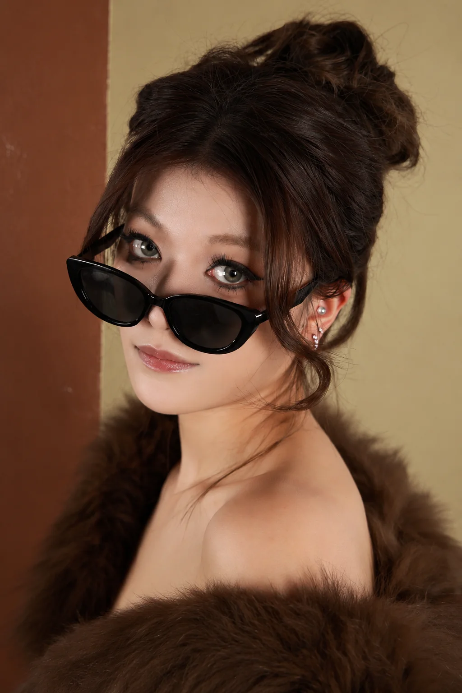
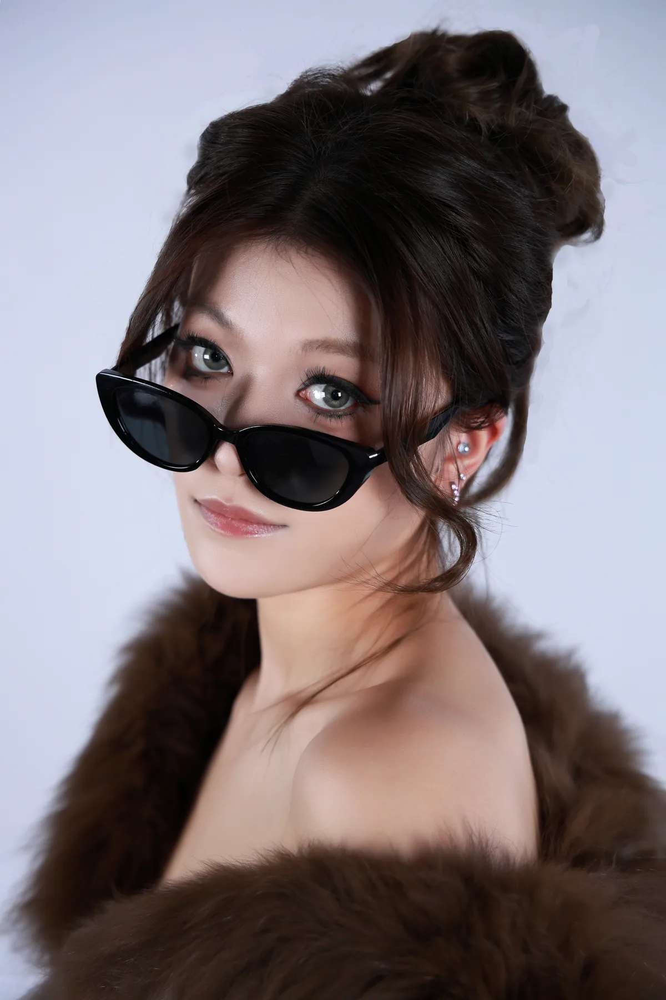

LIU MIAO XIN YI / SELECTED WORKS 2026
刘淼鑫燚
摄影与视觉内容
从前期策划、现场拍摄到后期呈现，持续探索真实影像与数字图像之间的关系。

BROWN ATTITUDE 时尚摄影 / 小组项目
SELECTED WORKS
作品目录
从实拍到数字影像。点击项目进入完整展示，或按创作方式筛选。
FASHION PHOTOGRAPHY
棕色姿态
BROWN ATTITUDE
用统一的棕色空间衬托服装材质与人物姿态。系列由全身、动作到近景肖像逐步靠近，让衣着细节和情绪共同成为画面的主角。
时尚摄影课程 · 三人小组完成
我的参与：前期策划与汇报、机位与灯位预案、现场布光协作；拍摄墨镜下拉的近景肖像。
PROCESS
同一张照片，三种空间
背景改变了人物与服装的关系。拖动分界线，对比原图或高级灰方案与最终采用的棕色版本。
最终展示统一采用棕色背景；对照图用于呈现画面选择过程。

对照棕色定稿VISUAL COMMUNICATION
汉服视觉
HANFU VISUAL
从服装轮廓、色彩和版式入手，把汉服的穿着感转化为三张不同气质的产品海报。
汉服购买决策调研与视觉传播 · 团队项目
我的参与：访谈整理、文案与图片排版协作。
横向浏览海报
STILL LIFE PHOTOGRAPHY
茶叶产品视觉
COLOUR & LIGHT
两组色彩，两种产品氛围。以道具、背景和光线组织产品情境，让包装在画面中保持清晰的视觉中心。
课程静物摄影 · 布景、拍摄与基础后期
ARCHITECTURE PHOTOGRAPHY
古楼映江城
WUHAN / HUANGHE TOWER
从屋檐、檐角与结构细节观察黄鹤楼。抬头取景时，建筑的秩序与天空共同成为画面的组成部分。
武汉建筑摄影系列 · 本人拍摄与后期整理
DIGITAL IMAGE & FILM
屏幕之中的人
VIRTUAL IMAGE
当电子屏幕代替面孔，表情成为可读取的状态。静态系列把这一设定带入街道、课堂与通勤场景；动态短片让个体走入同质化的人群。
AI 图像生成与 Photoshop 修整 · 实验影像生成与后期剪辑
SHORT FILM / 28.7 SEC
意识上传后的怪诞狂欢
短片由写实群像切入蓝灰色深度影像：衣着与表情消失，身体只留下轮廓。这段突变被设定为人们将意识上传到云端后，系统内部出现的异常、怪诞的集体狂欢。
ABOUT & RESUME
关于我
刘淼鑫燚
摄影与视觉内容